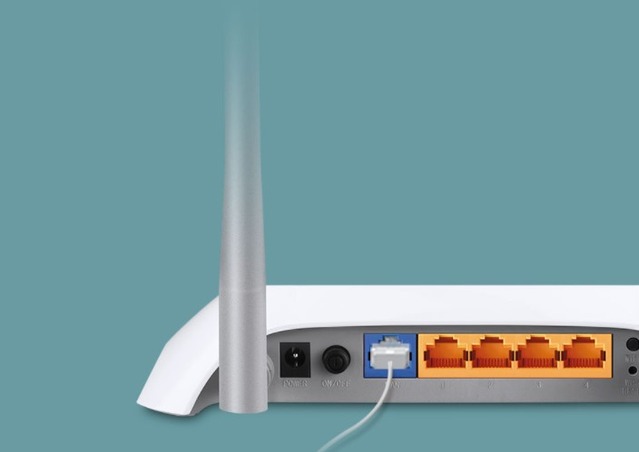

Apa pentingnya belajar jurusan TKJ?
Belajar jurusan Teknik Komputer dan Jaringan (TKJ) memiliki berbagai pentingnya dalam dunia pendidikan dan karir di era digital seperti sekarang ini. Berikut adalah beberapa alasan mengapa belajar jurusan TKJ sangat penting:
Dalam era teknologi informasi yang terus berkembang pesat, permintaan tenaga kerja di bidang teknologi komputer dan jaringan semakin tinggi. Peluang kerja yang luas dan peluang berkarir yang menjanjikan membuat jurusan TKJ menjadi pilihan menarik bagi para pelajar yang tertarik dengan dunia teknologi.
Jurusan TKJ mengajarkan siswa untuk menguasai berbagai aspek teknologi informasi, termasuk pemrograman, jaringan komputer, desain web, dan manajemen sistem. Dengan pemahaman yang mendalam tentang teknologi, lulusan TKJ lebih mudah beradaptasi dengan perubahan teknologi yang cepat di era digital.
Ilmu dan teknologi terus berkembang, dan belajar TKJ memungkinkan para pelajar untuk berinovasi dan menciptakan solusi teknologi yang baru. Hal ini penting dalam menghadapi tantangan masa depan dan memajukan peradaban manusia.
Jurusan TKJ memberikan pendidikan yang berfokus pada keterampilan praktis, seperti pemrograman, administrasi jaringan, keamanan siber, dan manajemen database. Siswa TKJ dilatih untuk menjadi tenaga profesional yang kompeten dan siap kerja. Mereka dapat membantu perusahaan atau organisasi dalam menghadapi tantangan teknologi yang kompleks.
Jurusan TKJ menawarkan berbagai jalur karir yang menjanjikan. Lulusan dapat menjadi administrator jaringan, teknisi komputer, pengembang perangkat lunak, analis keamanan siber, dan masih banyak lagi. Dengan perkembangan teknologi yang terus berlanjut, lapangan pekerjaan di bidang ini cenderung akan semakin berkembang.
Kamu mungkin juga suka:

TP-Link
TP-Link adalah sebuah perusahaan global yang berfokus pada solusi jaringan dan komunikasi. Perusahaan ini didirikan pada tahun 1996 di Shenzhen, China. TP-Link dikenal sebagai salah satu produsen terkemuka dalam pembuatan perangkat jaringan seperti router, switch, adapter Wi-Fi, powerline adapter, dan perangkat jaringan lainnya.
WinBox
WinBox memiliki reputasi yang baik dalam dunia jaringan karena kehandalannya dan kemudahan penggunaannya. Bagi para profesional jaringan, aplikasi ini menjadi alat yang tak tergantikan dalam melakukan konfigurasi dan pemantauan jaringan MikroTik.
Cisco Packet Tracer
Cisco Packet Tracer adalah perangkat lunak simulasi jaringan yang dikembangkan oleh Cisco Systems. Perangkat lunak ini dirancang untuk membantu para profesional jaringan, siswa, dan instruktur dalam memahami dan menguji berbagai konsep jaringan secara praktis dan interaktif.